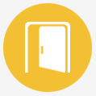
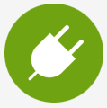
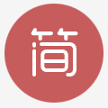
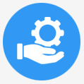

- 统一的合作入口
- 能力开放平台为合作伙伴提供统一的开放合作服务门户，打造统一的运营商级能力开放合作品牌和入口。 一点接入，电子签约，全网服务，各种能力尽在掌握。

- 标准化开放能力接口
- 能力开放平台采用互联网业界通行的标准协议和设计风格，为开发者提供标准化的能力接口以及详尽的文档， 旨在极大降低开发者学习成本，迅速打造独具一格的创新产品。
- 稳定的基础通信服务
- 能力开放平台将具有核心竞争力的通信能力以互联网API方式呈现，方便开发者嵌入和使用短信、多方通话、点击 呼叫以及物联网、云存储等基础通信服务，创新应用功能。
- 渠道推广与终端合作
- 能力开放平台借助在渠道和终端合作方面的优势，为合作伙伴提供应用推广渠道，将优秀应用产品快速送达 用户的手中，接触亿万用户。
- 提升能力技术与服务效益
- 能力开放平台可帮助能力提供方推广自身能力服务，依托运营商级基础云平台，轻松服务于数十万计创新应用， 加速技术与能力服务转化，并获得丰厚回报。
- 加速渠道签约过程
- 缩短渠道接入需要通过市场部沟通、签约、多级审核、接口谈判等大量的交互时间。

- 精简渠道拓展工作
- 优化新增渠道的部署，不再需要后台开发人员打包、配置配置文件、配置数据库配置、部署应用等。

- 高效接口响应效率
- Redis、线程池和可靠消息等典型互联网企业使用的关键技术，可以明显提升接口执行响应效率。
- 良好支持云计算和大数据
- 支持虚拟化设备的使用，支持x86化，使得硬件扩容设备投资相比同类产品降低30%-50%。
- 健壮的应用运行架构
- 结合Redis、HBase和文件系统的特性，使得在Oracle数据库发生故障无法响应的时候，应用能够脱离数据库继续运行、 并提供正常、高效的服务能力，充分保障对外开放的业务连续、稳定。

- 基于SMAP的服务治理
- 提供服务上下线、信息维护、监控和相关审批功能，支撑日常运维。解决重复开放，节约时间和成本。

- 便捷人性系统运维视图
- 遵循互联网产品设计理念，拥有专业的用户体验设计团队，通过提供全新的视图给渠道和开发、维护人员， 带来操作便捷的提升。
- 多维度监控平台
- 性能，失败率，配额，服务执行轨迹等多维度监控；一级异常告警处理机制，降低故障率，缩短处理时间，提升满意度。